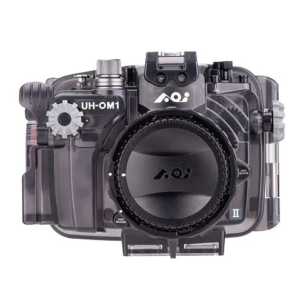
UH-OM1 II ハウジング
PENマウント／ポリカーボネート製／1,079g。バキュームセンサー・ウェットセンサー・フラッシュトリガーを1つにまとめた「マルチファンクションユニット」を内蔵。
DIVE FIELD GUIDE
UH-OM1 II ハウジング ／ FLP-09 フラットポート（90mmマクロ）／ UMG-01 マグニファイヤー
今回の組み合わせ。FLP-09 は M.ZUIKO DIGITAL ED 90mm F3.5 Macro IS PRO 専用のポートです。

PENマウント／ポリカーボネート製／1,079g。バキュームセンサー・ウェットセンサー・フラッシュトリガーを1つにまとめた「マルチファンクションユニット」を内蔵。
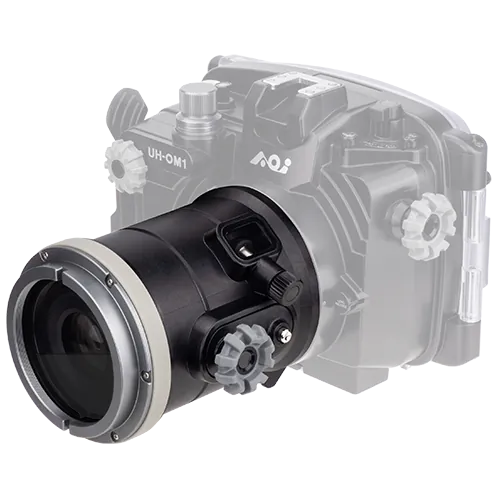
90mm Macro PRO 専用。中間ポートなしでハウジングに直接付きます。ポートのノブでマニュアルフォーカス、Fnボタン、フォーカスエリア切替などを操作できます。
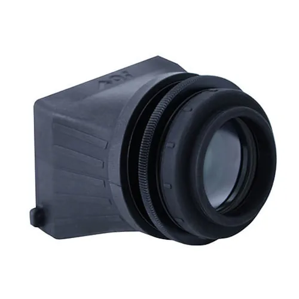
背面のLCDを水中で約2.3倍に拡大して見せる。一体型のゴムフードで反射を抑え、接眼部の視度調整リングで自分の目に合わせられます。
| UH-OM1 II | FLP-09 | UMG-01 | |
|---|---|---|---|
| 耐圧水深 | 45m | 60m | 100m |
| 重量 | 1,079g | 328g | 178g |
| サイズ | W196×H130×D150mm | L113×W92×H136mm | W76×H93×D78mm |
| 材質 | ポリカーボネート | ポリカーボネート、グラスファイバー | 光学ガラス＋マルチコート、耐食アルミ合金、合成ゴム |
| 付属品 | 下の「持ち物」参照 | フロントキャップ LFC-01、リアポートキャップ PRC-01、フォーカスクラッチブロッキングリング FCBR-01 | ストラップ QRL-01、アイピースキャップ |
組み合わせた機材のうち、もっとも浅いハウジング（45m）が全体の上限になります。ポート（60m）やマグニファイヤー（100m）の数字に合わせないこと。
重量の合計（ハウジング＋ポート＋マグニファイヤー）は約 1,585g です。カメラとレンズの重さは含みません。
チェックはこの端末のブラウザに保存されます。出発前に使い、帰宅したら「リセット」してください。
本体のOリングを外しておくのがおすすめです。気圧の変化でハウジングが開かなくなることがあり、無理に開けると本体の破損やケガにつながります。
1回の充電で約4日使えます（1日3ダイブ、1ダイブ約1時間で計算）。ランプの見方は充電ランプ早見表。
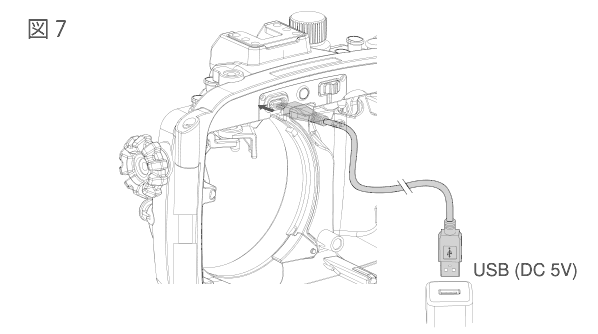
ハウジングを開け閉めするたびに毎回やります。
グリス自体に防水性はありません。ただ、量が少ないとOリングが溝の中で部分的にねじれ、そこから浸水します。
カメラを入れる前に、空のハウジングを実際に潜る水深まで沈め、浸水しないか確かめます。出荷前に耐圧検査はされていますが、輸送中のトラブルはありえるためです。その水深まで沈められなくても、浅いところで必ず実施してください。
浸水の主な原因：Oリングの付け忘れ／溝に正しくはまっていない／Oリングの傷・ひび・変形／溝や接触面の砂・髪の毛／接触面や溝の傷／カメラの位置ずれ／ストラップや除湿剤の挟み込み
カメラの説明書によると、MFクラッチを「無効」にするとフォーカスリングの位置に関係なく、カメラの［AF方式］どおりに動きます。ただし、無効のままリングが MF の位置にあると、リングを回してもピントは動きません（OM-1 説明書 p.149）。ラバーリングはリングを AF/MF の位置に止めておくためのもので、これでポートのノブからピントを操作できます。
ほかのカメラ設定は次の「カメラ設定」にまとめています。
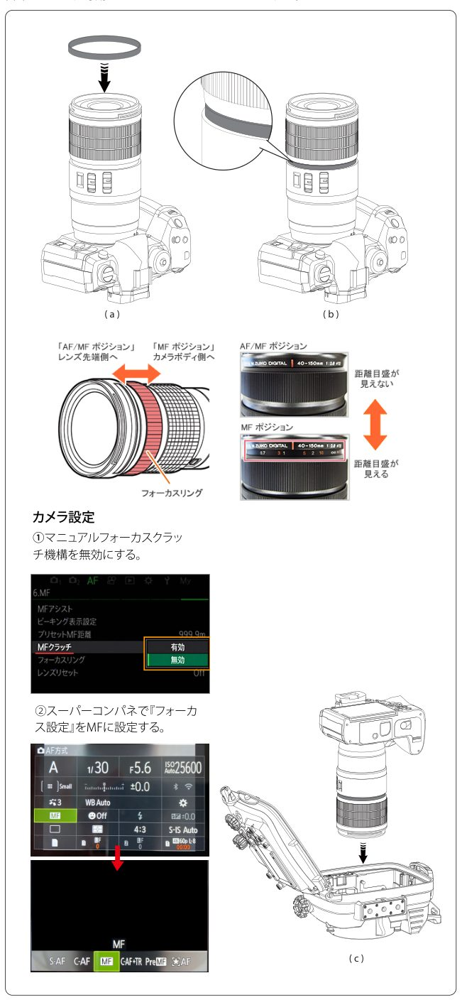
90mmマクロ＋FLP-09 で撮るときの OM-1 の設定です。ハウジングに入れると MENU が操作しにくくなるので、陸上で済ませ、最後にカスタムモード（C1〜C4）に登録しておきます。
メニューの場所とページ番号は OM-1 Mark II 取扱説明書（v1.2） によるものです。初代 OM-1 では項目名や場所が違う場合があります。必須は FLP-09 の取付方法に書かれている設定、おすすめは説明書の機能をもとに選んだこのページの提案です。
| 項目 | 設定 | 理由 |
|---|---|---|
| MFクラッチAF › 7. MF › MFクラッチ（p.149） | 必須無効 | レンズのリング位置ではなく、カメラの［AF方式］で AF と MF が決まるようにする。 |
| AF方式スーパーコンパネ／AF › 1. AF › AF方式（p.100） | 必須MF | ポートのノブ（レンズのピントリング）でピントを合わせる。FLP-09 の取付方法の指定。 |
| MF時のAF-ON動作AF › 1. AF › MF時のAF-ON動作（p.117） | おすすめAFする | MF のままでも、ハウジングの AF-ON レバーを押せば S-AF でピントを合わせられる。AF で大まかに合わせ、ノブで追い込む使い方ができる。 |
| MFアシストAF › 7. MF › MFアシスト（p.144） | おすすめピーキング On 拡大 好みで | ノブを回したときだけ、ピントの合っている輪郭に色が付く。拡大を On にすると、ノブを回すたびに画面が拡大される。 |
| ピーキング表示設定AF › 7. MF › ピーキング表示設定（p.146） | おすすめ色 赤 か 黄 | 白・黒・赤・黄から選べる。青い水中の背景では赤か黄が目立つ（このページの提案）。表示中に INFO ボタンでも変えられる。 |
| AFターゲットモードAF › 6. AFターゲットの設定/操作（p.107〜108） | おすすめSingle か Small | マクロは狙った一点（目など）に合わせたいので、範囲の狭いターゲットにする。 |
| 被写体検出AF › 2. AF › 被写体検出（p.120） | おすすめOff | 検出できるのは人物・モータースポーツ・飛行機・鉄道・鳥・犬猫だけで、魚やウミウシは対象外。 |
| レリーズ優先AF › 1. AF › レリーズ優先（p.118） | おすすめS-AF On | Off のままだと AF が合わないときにシャッターが切れない。マクロでは AF が迷いやすいので、自分の判断で切れるようにしておく。 |
| レンズリセットAF › 7. MF › レンズリセット（p.151） | おすすめOff | 電源を切っても、MF で合わせたピント位置がリセットされずに残る。 |
| フォーカスリングAF › 7. MF › フォーカスリング（p.150） | 好みで | ノブを回す向きとピントが動く向きの関係を逆にできる。 |
ハウジングの各部名称にマルチセレクターはありません。カメラの初期設定では、AFターゲットはマルチセレクターで動かし、十字ボタンには何も割り当てられていません（p.86、p.330）。そこで十字ボタンを使えるようにしておきます。
| 項目 | 設定 | できること |
|---|---|---|
| 十字ボタンC › 1. 操作 › ボタンの設定 › 静止画ボタン機能（p.329〜337） | おすすめダイレクト機能 |
↑露出補正
←AFターゲット選択
十字
→MF切換
↓WBモード
→ と ↓ はほかの機能にも変えられます。
|
| FnレバーC › 1. 操作 › Fnレバーの設定 › 静止画Fnレバー機能（p.345〜346） | おすすめmode2 | レバーの位置1と位置2に、それぞれ［AF方式］［AFターゲットモード］［AFターゲット位置］を覚えさせられる。たとえば位置1を「MF＋Small」、位置2を「S-AF＋Single」にすると、ハウジングの FN レバーだけで切り換えられる。 |
ハウジングのフラッシュトリガーは、ホットシューの信号を光に変えて光ファイバーで外部ストロボへ送ります（ハウジング説明書 p.15）。カメラ側はふつうの外部フラッシュと同じように設定します。
| 撮り方 | 同調速度の上限 |
|---|---|
| 通常（メカシャッター） | 1/250秒（p.179） |
| 静音撮影／フォーカスブラケット／深度合成 | 1/100秒（p.181、p.249） |
| 上記で ISO 16000 以上 | 1/50秒（p.181） |
マクロは被写界深度がとても浅いので、ピント位置をずらしながら連続で撮る機能が使えます。どちらも電子シャッターの静音撮影で撮るため、ストロボの同調速度は 1/100秒になります。
静止画2 › 1. コンピュテーショナル撮影 › 深度合成撮影（p.247〜249）
静止画2 › 3. ブラケット撮影 › Focus BKT（p.274〜276）
説明書では、カメラぶれを抑えるためにリモコンの使用を勧めています（p.249）。水中の手持ちでは、何枚も撮っているあいだに自分や被写体が動いて失敗しやすいので、動かない被写体を、体を安定させて撮るときに使います（このページの補足）。
| 項目 | 設定 | 理由 |
|---|---|---|
| EVF自動切換設定セットアップ › 3. モニター/音/接続 › アイセンサーの設定 › EVF自動切換設定（p.393） | おすすめOff | 初期設定は On で、アイセンサーに何かが近づくと表示がファインダーに切り換わり、モニターが消える（p.48）。ハウジングに入れるとアイセンサーがハウジングの壁でふさがれ、モニターが映らなくなることがある。Off にすると、LV ボタンを押したときだけ表示が切り換わる。LV ボタンを長押しすると、この設定画面を直接開ける（p.333、p.393）。 この設定はカスタムモード（C1）に登録されない（p.538）ので、陸上に戻ったら On に戻す。 |
| ホワイトバランス静止画1 › 2. ピクチャーモード/WB › WBモード（p.225〜226） | ストロボ主体：Auto か WBフラッシュ（5500K） 自然光：水中 | 「水中」は WB のプリセットのひとつ。ストロボの光が主になるマクロでは、フラッシュ相当の 5500K か Auto が基本。 |
| ワンタッチWBWB設定画面でワンタッチWB1〜4 を選び INFO（p.228） | 必要なら | 白い板などを画面いっぱいに写して測る。登録した値は電源を切っても消えない。 |
| ピクチャーモード静止画1 › 2. ピクチャーモード/WB（p.217〜218） | 好みで 水中 | 水中写真に合った鮮やかな色に仕上がる。使うときは静止画1 › 2. ピクチャーモード/WB › フラッシュ+WB連動（p.233）を Off にするよう説明書に書かれている（On だと発光時に WB が Auto や 5500K に切り換わる）。 |
| 手ぶれ補正静止画1 › 8. 手ぶれ補正（p.201〜202） | S-IS AUTO か S-IS1 | 高倍率の撮影で起きやすい手ぶれを抑える。IS スイッチのあるレンズは、レンズ側の設定が優先される。 |
| スリープセットアップ › 5. 電池/スリープ › スリープ時間（p.402） | 1分／3分／5分 | ハウジングの MFU はカメラのスリープに合わせて眠り、カメラが起きると一緒に起きる（ハウジング説明書 p.15）。シャッター半押しで復帰する。 |
| 自動電源Offセットアップ › 5. 電池/スリープ › 自動電源Off（p.403） | おすすめ長め（1時間など） | スリープのあとさらに時間がたつと電源が切れる。切れたら電源レバーで入れ直す必要がある。 |
C1 で設定を変えても、初期設定ではモードダイヤルを回すと登録時の内容に戻ります。変えた内容を残したいときは［カスタム保持設定］を［保持する］にします（p.78）。
当日、カメラをハウジングに入れて水に入るまでの流れ。各ステップの「済」にチェックすると進み具合が残ります。
砂やほこりが多い場所では開け閉めしないこと。異物がOリングに付くと浸水の原因になります。直射日光の当たる場所に置いておくのも避けます。中が温まった状態で水に入れると、急な温度変化で結露するためです。
ハウジングを開ける
ポートリリースボタンを押しながら、ボディキャップを反時計回りに約90°回して引き抜きます（図1・2）。
ボディキャップは小物入れになっています。土台を持って側面のラッチを押し下げ、上のキャップを反時計回りに約30°回すと開きます（図3・4）。
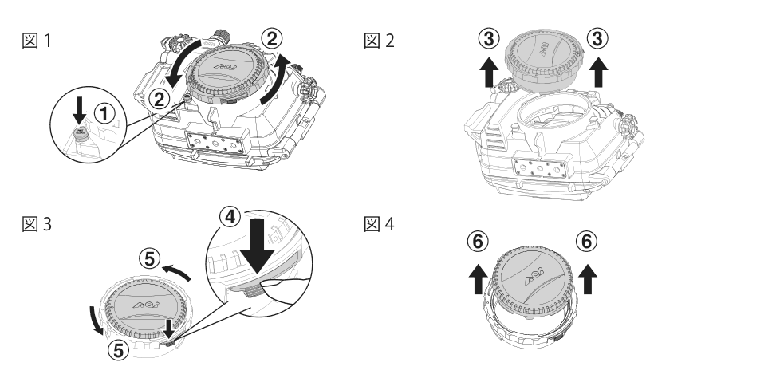
ロータリーバックルのセキュリティロックを矢印の方向にスライドして解除し（図5）、ロータリーバックルを押しながら時計回りに回します（図6）。リアケースが開いてバックルから完全に外れるまで回します。
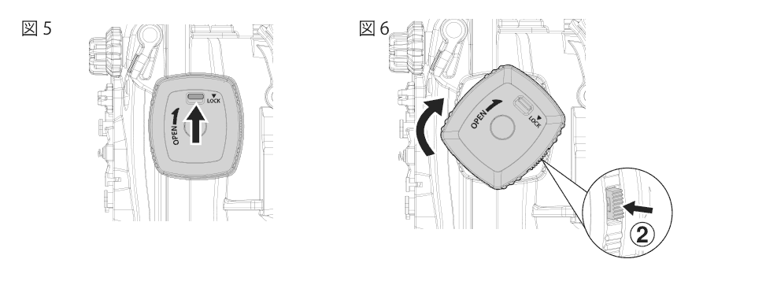
Oリング、溝、Oリングが当たる面を指でなぞり、目でも見て、砂・髪の毛・傷がないか確認します。手順は前日準備のOリングメンテナンスと同じです。
カメラを入れる
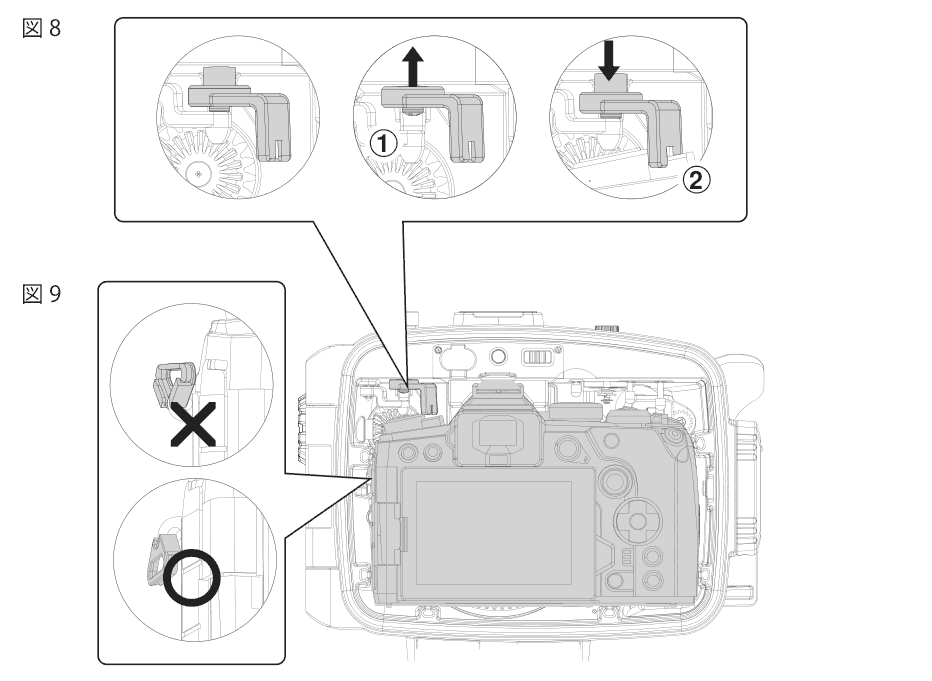
カメラのホットシューとMFUのUSBポートを HSC-02 でつなぎ（図10）、MFUの電源を入れます（図11）。
カメラのコントロールパネルのフラッシュモードを見て、フラッシュマークが点灯していれば接続完了。灰色ならつながっていないので、やり直します。
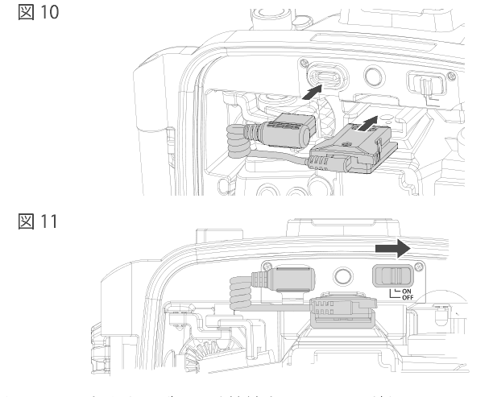
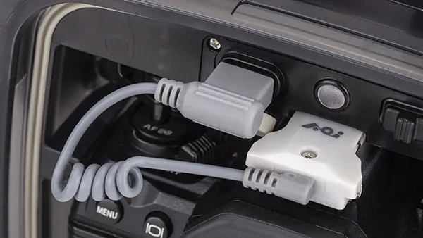
閉じたあと、Oリングを何か挟んでいないか、全周を見渡して確認します。
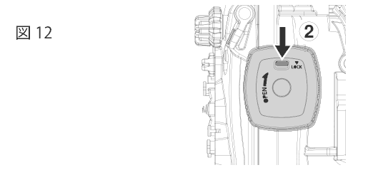
カメラの電源を入れ、すべてのスイッチ、ダイヤル、ギアが正しく効くか確かめます。
ポートとマグニファイヤーを付ける
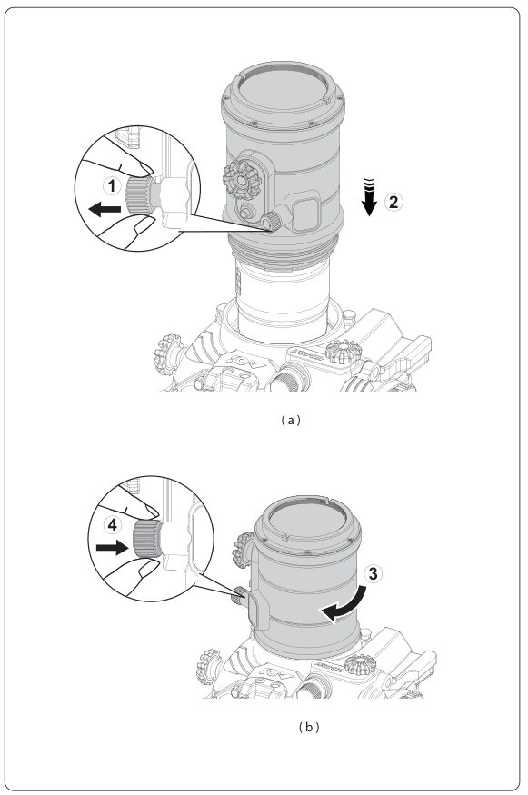
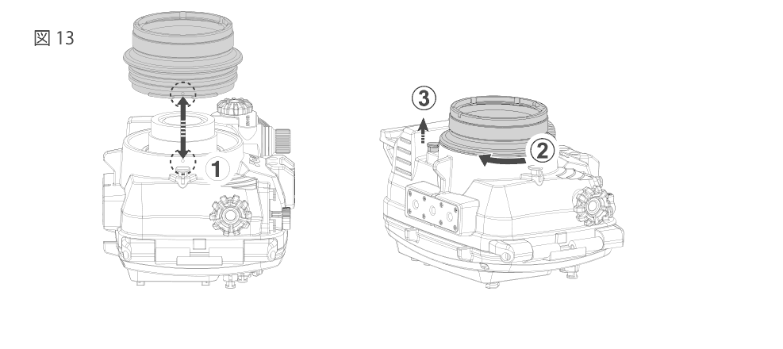
マスクを着けた水中では、陸上と見え方が変わることがあります。
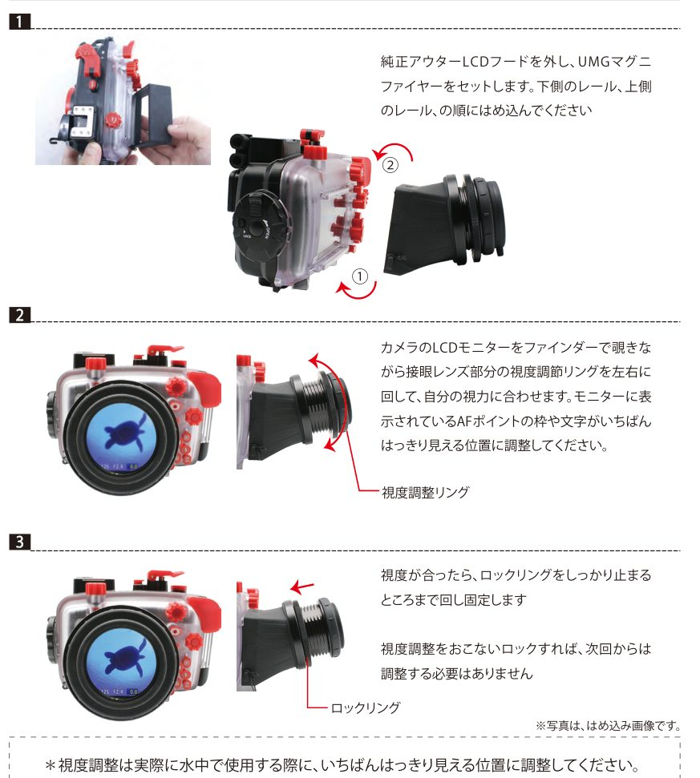
密閉チェック
黄と赤の交互点滅は吸いすぎ。赤いバルブキャップを反時計回りに回して黄点灯まで空気を戻します。戻しすぎて黄点滅に戻ったら、黄点灯までもう一度ポンプで抜きます（図2）。ほかの表示はランプ早見表へ。
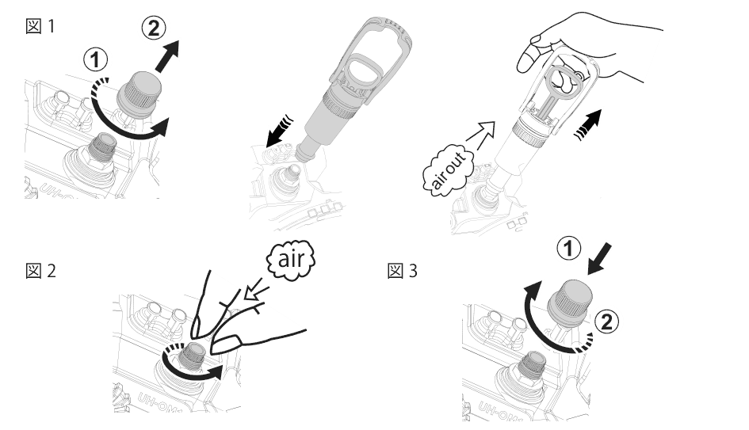
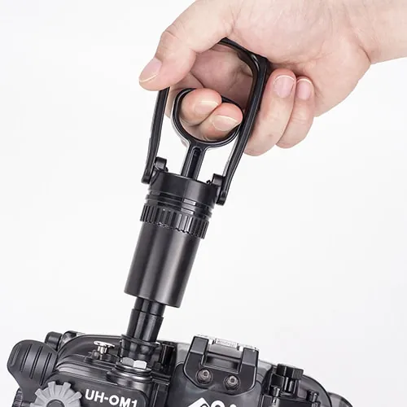
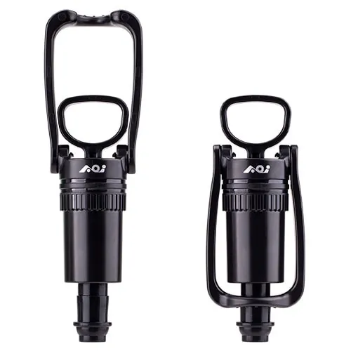
3分の分析でOKでも、ケバや異物の付着・挟み込みがあると浸水することがあります。OK後に陸上で30分〜1時間置き、赤点滅（NG）にならないかを見るのが推奨されています。
終わると音と振動で知らせます（ページを開いたままにしてください）
ダイビング中は真空（陰圧）状態のまま使います。センサーが圧力の変化をずっと監視しているためです。
MFUのランプの点き方を再現しています。点滅の速さは説明書の記載（1回/秒、4回/秒）に合わせ、記載がないものは見分けやすい速さにしてあります。
| ランプ | 状態 | やること |
|---|---|---|
青 点滅1回/秒 | 真空分析の準備完了 | 排気を始める |
点滅5秒に1回 | スタンバイ（10分以上操作なし） | — |
黄 点滅 | 真空が足りない（吸い出し中） | ポンプを続ける |
黄 ゆっくり点滅 | 吸い出し完了まであと少し | ポンプをゆっくりにする |
黄 点灯 | 吸い出し完了／分析中 | ポンプを止めて外し、キャップを戻して約3分待つ |
緑 点滅1回/秒 | 分析OK | 水中で使える |
黄と赤 交互点滅 | 真空が強すぎる | 赤いバルブキャップを反時計回りに回し、黄点灯まで空気を入れる |
赤 点滅4回/秒 | 分析NG | ケバ・異物の付着、挟み込みがないかセッティングを確認 |
赤と青 交互点滅 | 大きな空気漏れを検出 | 防水性・Oリングの密閉を確認 |
BEEP赤 点灯＋ブザー | ウェットセンサーが水を検出 | すぐに浮上・使用中止。水漏れ箇所を調べる（トラブル） |
スタンバイ時の色は説明書に記載がないため、ここでは青で表示しています。
| ランプ | 状態 | やること |
|---|---|---|
青 高速点滅4回/秒 | 充電が必要 | USB充電器につなぐ |
緑 高速点滅4回/秒 | 充電中 | そのまま充電を続ける |
緑 点滅 | 充電完了 | 充電器から外す |
「緑点滅」は充電完了とバキュームOKのどちらでも出ます。充電ケーブルがつながっているかどうかで見分けてください。
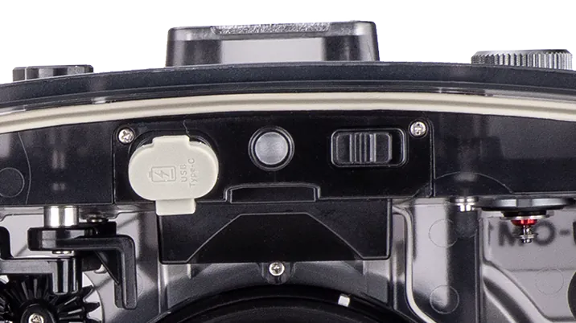
グリップのないハウジングなので、本体を直接持って指先で操作します。
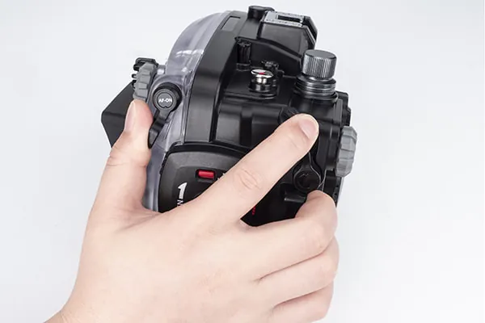
ハウジング側の名前はハウジング説明書 p.6〜7、カメラ側の名前と働きは OM-1 Mark II 説明書のものです。ハウジング説明書には、どのボタンがカメラのどこを押すかが書かれていないため、名前と位置から対応させています。「設定後」はカメラ設定の「おすすめ」を入れた場合の働きです。
| ハウジング | カメラの操作部 | 働き |
|---|---|---|
| シャッターレバー前面・右手人差し指 | シャッターボタン | 半押しでピント合わせ、全押しで撮影（p.52）。設定後：AF方式が MF なので、半押ししても AF は動かない |
| シャッターボタン上面 | シャッターボタン | シャッターレバーと同じ。 |
| AF-ONボタンレバー | AF-ON ボタン | 押している間 AF する（p.116）。設定後：MF のままでも S-AF でピントを合わせる（p.117） |
| フロントダイヤル右手中指 | フロントダイヤル | 撮影モードに応じた露出の設定（p.59〜66）。Fnレバーを mode1 にすると、レバーの位置で働きが変わる（p.346）。 |
| ＋／−ボタン | 露出補正ボタン | 押しながらダイヤルで露出補正（p.152）。 |
| ビデオボタン | ムービー／ハイレゾショットボタン | 静止画モードではハイレゾショット、ムービーモードでは録画の開始・停止（p.86〜87、p.329）。 |
| ロックボタン | モードダイヤルロック位置からの推定 | モードダイヤルのロック（p.52）。 |
| 電源レバー | ON/OFF レバー | 電源の入／切（p.39）。 |
| AFボタン | AF／測光モードボタン | 押して十字の ←→ で AF方式（S-AF／MF など）を選ぶ（p.100、p.158）。 |
| レンズリリースボタン | レンズ取り外しボタン | レンズを外すときのボタン（p.37）。撮影中は触らない。 |
| 露出補正ダイヤル | — | 説明書に対応するカメラ側の操作部の記載がなく、このページでは確認できていません。陸上で回して、何が変わるか確かめてください。 |
| ハウジング | カメラの操作部 | 働き |
|---|---|---|
| リアダイヤル右手親指 | リアダイヤル | 撮影モードに応じた露出の設定（p.59〜66）。 |
| FNレバー | Fn レバー | 初期設定の働きはメニューの［Fnレバー機能］による（p.345）。設定後（mode2）：位置1／位置2 で AF方式・AFターゲットを切り換える（p.346） |
| AELレバー | AEL／プロテクトボタン | 撮影時は露出を固定（AEL、p.159）、再生時は画像のプロテクト（p.299）。 |
| ISOボタン | ISO／レーティングボタン | 撮影時は ISO 感度（p.165）、再生時はレーティング（p.308）。 |
| モードダイヤル | モードダイヤル | 撮影モード（P／A／S／M／B／動画／C1〜C4）を選ぶ（p.52）。 |
| MENUボタン | MENU ボタン | メニューを開く（p.97）。 |
| LVボタン | LV ボタン | 初期設定（EVF自動切換設定 On）では、モニターの表示をスーパーコンパネとライブビューで切り換える（p.48）。長押しすると［EVF自動切換設定］の画面が開く（p.333）。設定後（EVF自動切換設定 Off）：モニターとファインダーの表示を切り換える（p.333）。モニターが消えたら、もう一度押す |
| INFOボタン | INFO ボタン | 画面の情報表示を切り換える（p.50）。ピーキング表示中は、色や強さの設定を開く（p.145）。 |
| ↑↓←→ボタン | 十字ボタン | 撮影時の初期設定は機能なし（p.86）。再生時は画像送り（p.290）。設定後（ダイレクト機能）：← AFターゲット選択／↑ 露出補正／→ MF切換／↓ WBモード（p.337） |
| 再生ボタン | 再生ボタン | 撮った画像を見る（p.290）。 |
| 削除ボタン | 消去ボタン | 再生中の画像を消す（p.302）。 |
ハウジング背面の図では十字ボタンの中央にもボタンが描かれていますが、説明書には名前が書かれていません。
| ポート | レンズの操作部 | 働き |
|---|---|---|
| フォーカスノブ | フォーカスリング | MF でピントを動かす。リングは専用ラバーリングで AF/MF の位置に固定しておく（FLP-09 取付方法、OM-1 説明書 p.149）。回す向きは［フォーカスリング］で逆にできる（p.150）。 |
| Fnボタン | レンズの L-Fn ボタン | 初期設定は「AF停止」。押している間、AF を止めてピントを固定する（p.330〜331）。ほかの機能にも変えられる。 |
| フォーカスエリア切り替え | レンズのフォーカスリミッター | AF でピントを探す距離の範囲を絞る。レンズ側のリミッターを使っているあいだは、カメラ側の［AFリミッター］は効かない（p.130）。 |
ポートで操作できる項目は FLP-09 の製品ページ（「Fnボタン、フォーカスエリア切り替え、マニュアルフォーカシング」）によります。ポートのどの部品がどれに当たるかは、陸上で実物を見て確認してください。
ハウジングの各部名称にない操作部です。使いたい機能は、届くボタンに割り当てるか、メニューから設定します。
例：AFターゲットはマルチセレクターの代わりに十字ボタンの ← で動かす。ワンタッチWB はボタンの割り当て（p.329）で、届くボタンに付け替える。
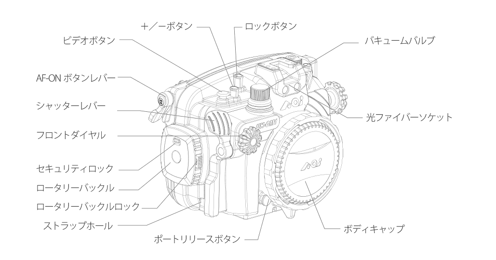
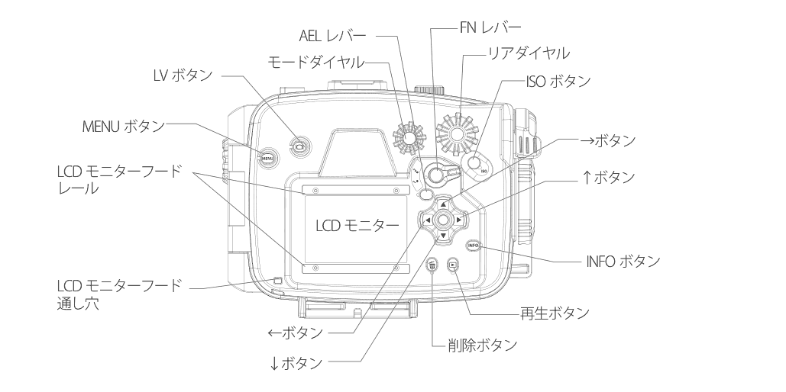
MFUにフラッシュトリガーが入っています。カメラのホットシューの信号を HSC-02 経由でMFUが受け、光信号に変えて光ファイバーケーブルで外部ストロボへ送ります。MFUの電源で光るので、カメラのバッテリーを節約できます。
撮影に夢中になると、重大な潜水事故につながりかねません。水深と潜水時間に十分注意してください。
中が真空（陰圧）のままリアケースを開けようとすると、ロータリーバックルが壊れるおそれがあります。
開けるときは、合わせ目に残った水滴がカメラに垂れないよう注意。髪の毛やウェットスーツからの水滴にも気をつけます。
ポートリリースボタンでロックを外し（①）、ポートを押し込みながら（②）回して（③）、引き抜きます（④）。番号は下の図に対応しています。
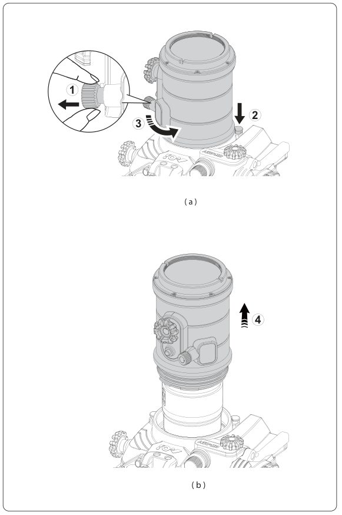
外したポートにはフロントキャップとリアポートキャップを付けておきます。
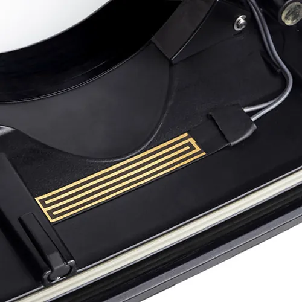
以下の項目を確かめて、もう一度テストします。
事前テストをしても浸水する場合は、使うのをやめて販売店か株式会社フィッシュアイのカスタマーサービスに相談してください。
このページの内容は、以下の株式会社フィッシュアイ（AOI 製品の国内販売元）の公開資料と OM-1 Mark II の取扱説明書をもとに個人用にまとめたものです。製品写真と取扱説明書の図版の著作権は株式会社フィッシュアイと各権利者に帰属します。正確な情報は必ず原典を確認してください。
ランプの点滅表示、手順のステップ、表、持ち方の図は、上の資料の記述をもとに HTML／CSS で作り直したものです。「補足」と書いた箇所は資料にない推測を含みます。